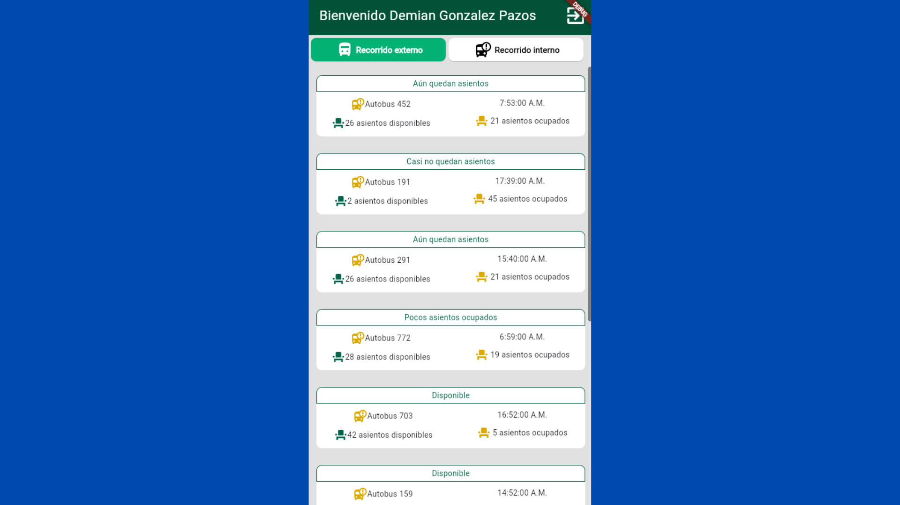
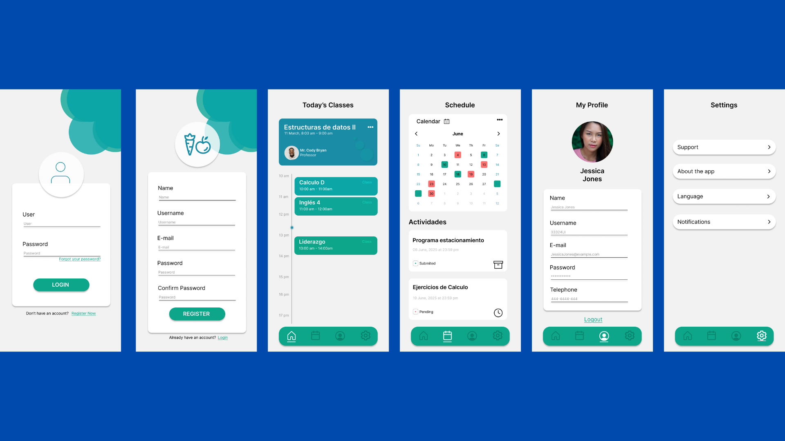
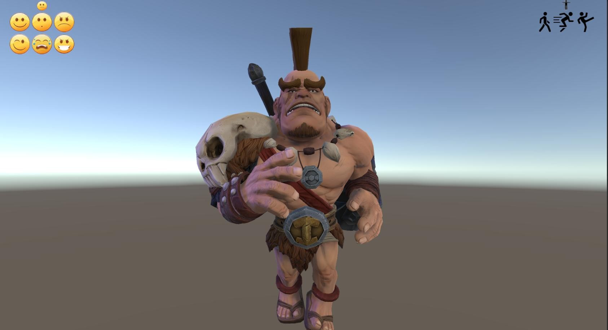

Mis Proyectos
App para Central
Aplicación que muestra la cantidad de asientos disponibles de una central
Desarrollada con Flutter nos permite visualizar las diferentes rutas que existen así como los asientos disponibles
The last Lighthouse
Un videojuego finalista de LATAM de la GameJamPlus 2024/2025
Este proyecto fue finalista de un concurso a nivel internacional y fue expuesto en un evento de la GameJamPlus llevado a cabo el mes de Marzo de 2025 en Sao Paulo.
Diseño UX/UI para diversas aplicaciones
Diseños para diversas utilidades y aplicaciones.
Realizado en Figma usamos diversas herramientas para crear y plasmar ideas dentro de Apps intuitivas y fáciles de usar tomando en cuenta las necesidades del cliente y el usuario
Investigación de reconocimiento de emociones (IA)
NPC que reacciona a tus emociones
Realizado en Unity se realizó un modelo de inteligencia artificial para clasificar emociones y en base a esto hacer actuar a un NPC de diferentes maneras
Juego de plataformas desarrollado en Unity

Juego de plataformas sencillo desarrollado en Unity
En conjunto con compañeros de la UNIAT desarrollamos un juego de plataformas inspirado en juegos como Hollow Knight
Juego para pruebas de audio en Unreal Engine
Juego para pruebas de audio en Unreal
Cree este nivel para la creacion de sonidos y exprimentacion con varias tecnicas utiles en el desarrollo de videojuegos en Unreal
Enlace a la demostración